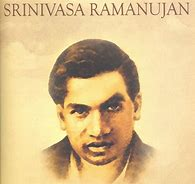

Members of the Society
- Smt. J. Padmavathy, M. Tech - President
- Sri M. Ranjit Reddy, M. Tech - Vice President (Dr)
- Sri A. Sambasiva Reddy, M. Tech - Secretary
- Sri K. Jagan Mohan Reddy, M. Tech - Joint Secretary
- Sri A.V. Ramana Reddy - Treasurer
- Smt. J. Nirmala Devi - E.C. Member
- Sri A. Rajeswara Reddy - E.C. Member
- Sri A. Nagasesha Reddy - E.C. Member
- Sri A. Ramachandra Reddy - E.C. Member
|

|